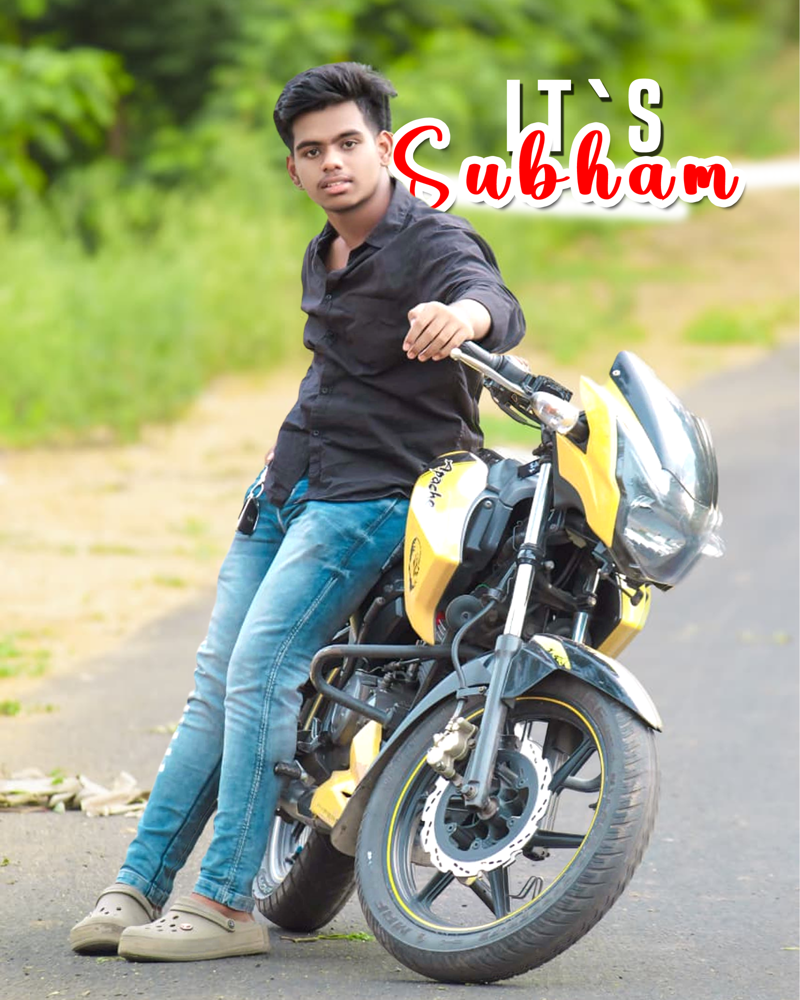

The rider
Meet Subham, captured in a bright, unhurried moment.
A portrait in motion
A face in the sunshine, a favorite ride close by, and the open road just beyond the frame.
Take a closer look01 — THE RIDER

Beyond the frame
A quiet pause, a favorite machine, and the open road nearby. This is one of those moments worth keeping exactly as it is.
Keep exploringMeet Subham, captured in a bright, unhurried moment.
A yellow motorcycle, ready for the next stretch of road.
Green all around, with the road leading out of frame.